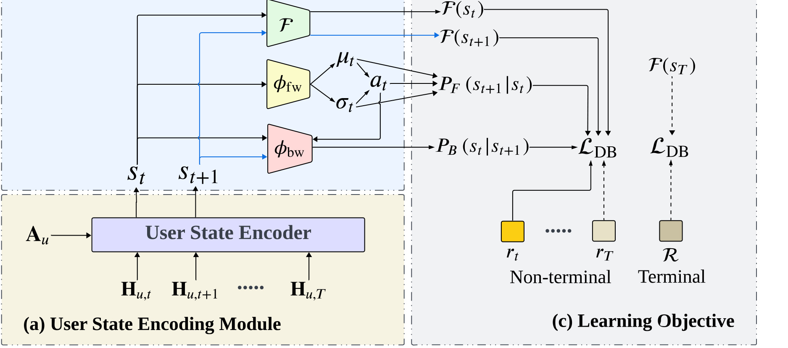
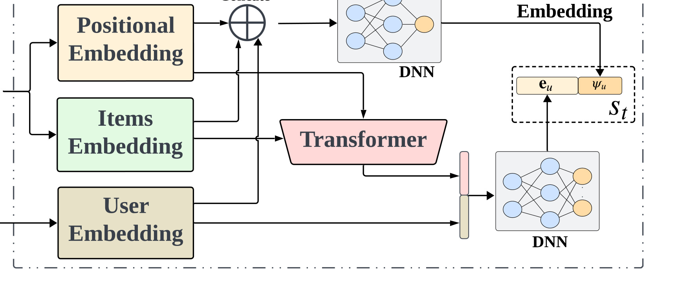
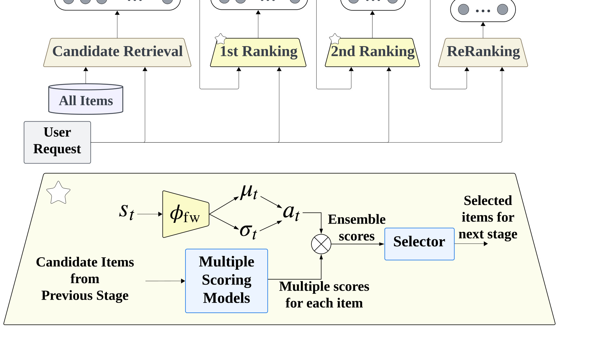
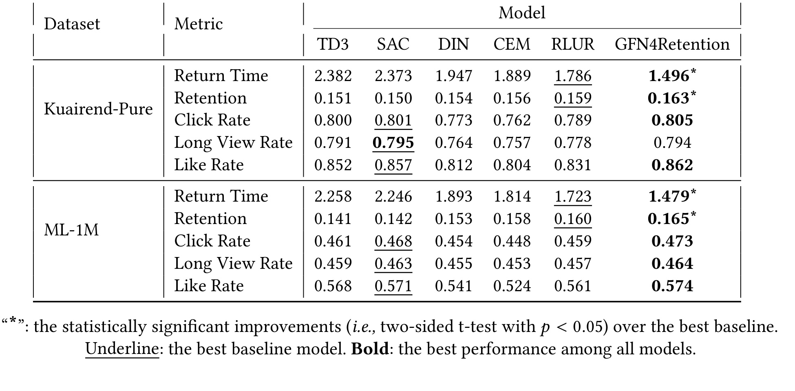
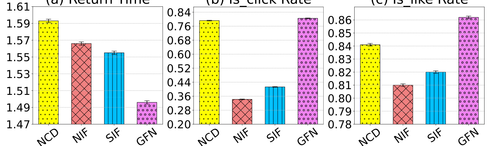
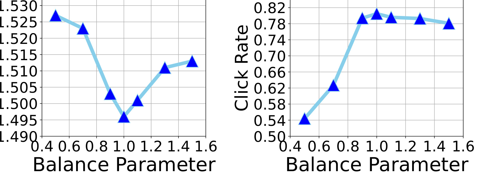
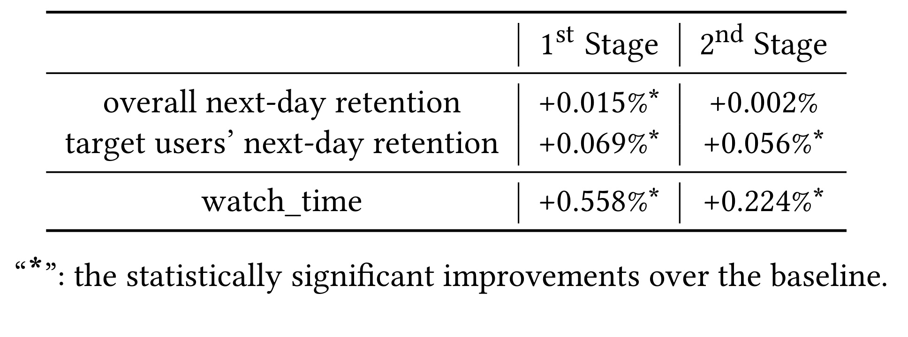

Modeling User Retention through Generative Flow Networks 是 KDD 2024 的推荐系统论文，论文入口为 arXiv:2406.06043。第一作者 Ziru Liu 来自 City University of Hong Kong，合作机构包括 Kuaishou Technology 和 Nanyang Technological University；论文同时给出 ACM DOI，并在 arXiv 页面提供了可核验的 项目代码。这篇论文的阅读重点不是“用 GFN 做一个更花的排序模型”，而是把用户留存这个跨 session、延迟、稀疏且难归因的目标，重新写成 session 轨迹生成概率和奖励流匹配问题，从而让留存奖励可以沿着一次会话里的每个推荐动作反传。
1. 背景和问题
推荐系统线上优化最熟悉的是点击、点赞、完播、评论、转发、收藏、购买等即时反馈。它们有两个优点：发生在推荐动作之后，日志容易对齐；样本密度相对高，适合训练监督学习或强化学习模型。但如果只看即时反馈，系统很容易优化成“用户此刻是否被吸引”，而不是“用户是否愿意持续回来”。论文从短视频和在线服务的运营目标出发，把 user retention 作为比单次 item 反馈更接近长期满意度的指标。用户留存通常和 DAU、活跃稳定性、服务质量感知有关，尤其在内容平台里，用户是否在离开后再次打开应用，往往比某条内容有没有被点开更能反映推荐策略是否健康。
留存目标困难的地方在于它不是一步反馈。一次会话中，系统可能连续推荐几十个 item，用户在其中点击、观看、点赞或无反馈；随后用户离开，再过一段时间才可能回到下一次 session。这个返回行为发生在会话之后，中间还有不可观测的外部因素，例如用户忙不忙、是否被其他应用吸引、现实生活中有没有空闲时间。即使我们观测到用户第二天回来了，也很难说是哪一个推荐动作导致了返回。传统监督学习会把每个推荐请求当成局部样本，优化 CTR 或 watch time；强化学习会把 session 看成 MDP，试图最大化累计 reward；但如果最终目标是跨 session retention，单纯累计即时 reward 只是 surrogate，并不能解释每一步 action 对最终留存的归因。
已有的 RL-based retention optimization 有价值，但论文指出两类缺口。第一，RL 通常需要在 exploitation 和 exploration 之间做权衡，而留存这种不稳定、延迟、稀疏目标会放大探索风险：线上探索错误可能直接影响用户体验，离线 simulator 又未必完全还原真实用户。第二，RL 里的长期价值估计虽然能纳入 delayed reward，却不天然给出“留存奖励如何分摊到每个推荐动作”的结构。比如一次 session 中有一条内容非常相关，另一条内容很差，用户仍然可能因为整体印象尚可而回来；如果只把整段 session 的结果当作统一回报，模型可能无法区分每个步骤对满意度的贡献。
GFN4Retention 的问题定义因此比普通排序更接近“生成一次让用户愿意回来的推荐轨迹”。论文把 session 中的状态序列 $ obreak\mathbf{S}={s_1\rightarrow s_2\rightarrow\cdots\rightarrow s_T}$ 看成由推荐策略生成的 trajectory。每一步状态 $s_t$ 对应用户请求和上下文，action $a_t$ 对应一个推荐列表，用户给出即时反馈 $r_t$；终态 $s_T$ 之后才观测到 retention reward $\mathcal{R}$。模型要做两件事：一是设计一个能够同时结合 $r_1,\ldots,r_T$ 和 $\mathcal{R}$ 的 session-level reward；二是学习一个推荐策略，在保持探索能力的同时优化这个组合 reward。
这篇论文的关键想法是借用 Generative Flow Networks 的“概率流”视角。GFN 原本用于从复杂分布中生成高 reward、多样化的对象，它不是只找单个最大 reward 解，而是学习让生成概率和 reward 成比例的策略。放到推荐系统里，session 就是生成对象，留存奖励就是终点 reward，中间每一步推荐动作都在推动轨迹走向某个终态。这样，留存不再只是最后给整段序列打一个分，而可以通过 flow matching 和 detailed balance 学习目标，把终态奖励反向分配给中间状态和动作。
这个建模角度对推荐工程有一个明确启发：留存优化不应只是在已有 ranker 之后加一个 retention model，也不应只把 watch time、click 和 return day 硬凑成线性多目标。更合理的方式是把“会话如何被生成”本身纳入目标，使每一步 action 的概率既受即时反馈约束，也受未来留存流约束。GFN4Retention 的贡献就在这里：它把推荐策略看成 forward flow，把留存估计看成 state flow，把即时反馈变成非参数的流因子，然后推导出一个 refined DB loss，使每一步 loss 中只出现对应步骤的即时奖励，同时终态仍然匹配留存奖励。
因此，这篇论文的背景价值并不只在“多优化一个留存指标”，而在于它把业务上最难解释的延迟目标转成了可训练的轨迹分布。只要这个分布能被稳定学习，推荐系统就可以在不放弃点击、观看这类密集信号的前提下，把用户是否愿意再次回来纳入同一条决策链路。
2. 方法
2.1 从 GFN 预备知识到留存归因视角
论文先回顾 GFN 的基本形式。给定一条生成轨迹 $\mathbf{S}=\{s_1\rightarrow s_2\rightarrow\cdots\rightarrow s_T\}$，前向策略 $P_F(s_{t+1}\mid s_t)$ 决定从当前状态走到下一状态的概率。GFN 的目标不是最大化单条轨迹的 reward，而是让轨迹的生成概率和终态 reward 成比例：
符号解释：$\mathbf{S}$ 是完整生成轨迹，$s_T$ 是终态，$P(\mathbf{S})$ 是这条轨迹被生成的概率，$R(s_T)$ 是终态观测到的奖励。对普通生成任务来说，$R(s_T)$ 可以是分子质量、目标属性或人工评分；对本文来说，它对应用户离开当前 session 之后再次返回的留存奖励。这个式子把留存建模成“整条 session 轨迹的目标分布”，而不是某一步推荐请求上的局部标签。
GFN 通过 flow estimator $\mathcal{F}(s_t)$ 表示状态 $s_t$ 被访问到的流量或生成似然，并引入 backward probability $P_B(s_t\mid s_{t+1})$ 表示从结果状态回看来源状态的概率。局部流守恒写成：
符号解释：左边是从 $s_t$ 经前向策略流向 $s_{t+1}$ 的概率质量，右边是到达 $s_{t+1}$ 后由后向模型分配给 $s_t$ 的概率质量。两者接近，意味着模型认为“从前往后生成”和“从后往前归因”在局部转移上是一致的。Detailed Balance loss 则在 log scale 上惩罚这种不一致：
符号解释：$\mathcal{L}_{\mathrm{DB}}$ 越小，说明前向流和后向流越匹配。对推荐留存来说，这个结构的价值在于，它天然提供了 step-wise attribution 的接口：终态留存奖励不是只停在 $s_T$，而是通过 $\mathcal{F}$ 和 $P_B$ 沿轨迹反传到每个非终态 $s_t$。

图 1 把论文方法拆成三个相互连接的部分。左下角是用户状态编码模块，它把用户特征和历史交互编码成当前状态；上方是 flow estimation module，其中 $\phi_{\mathrm{fw}}$ 负责前向策略，$\phi_{\mathrm{bw}}$ 负责后向流，$\mathcal{F}$ 估计状态流；右侧是学习目标，非终态步骤同时看到即时反馈 $r_t$ 和后续状态流，终态则和 retention reward $\mathcal{R}$ 对齐。这个结构说明 GFN4Retention 的核心不是“在 ranker 后面预测 return day”，而是把一次 session 的推荐过程视为概率流生成过程。用户状态先被编码，前向策略从状态采样动作，动作改变后续状态；终态留存奖励通过 DB loss 回到中间步骤，使每个推荐动作都能获得与留存相关的训练信号。图中的 non-terminal 和 terminal 分支也预告了后文 refined objective：中间步骤要同时处理即时反馈和未来留存，终态只需要匹配留存奖励。
从留存归因角度看，GFN 比直接用 RL value function 更适合本文的问题意识。RL 的 value 估计通常关心某个 state-action 的期望回报，探索策略可能为最大化长期 reward 服务；GFN 则学习一个和 reward 成比例的生成分布，保留高 reward 轨迹的多样性。这对推荐有实际意义：系统不一定只想找到一条“最能留住用户”的固定列表，而是需要在高质量、多样化和稳定探索之间保持平衡。GFN 的生成概率和奖励成比例，使多个高留存候选轨迹都可以获得概率质量，而不是被单一最优路径压扁。
2.2 用户状态编码：历史序列和上下文检测双路输入
GFN4Retention 的第一个具体模块是 user state encoding。每个推荐请求来自用户 $u\in\mathcal{U}$，包含用户特征集合 $\mathbf{A}_u$ 和交互历史 $\mathbf{H}_{u,t}$。这些输入需要被压缩成当前状态 $s_t$，因为后续前向策略、流估计和后向估计都以 $s_t$ 为条件。论文采用两路结构：一路用 transformer 处理历史交互，取最后输出作为历史编码；另一路用 DNN-based context-detecting module 处理请求上下文，输出附加的上下文嵌入 $\psi_u$。用户特征嵌入与历史编码进一步经过神经网络得到 $\mathbf{e}_u$，最终 $s_t$ 由 $\mathbf{e}_u$ 和 $\psi_u$ 共同构成。

图 3 显示了状态编码器的细节。左侧输入包括 positional embedding、items embedding 和 user embedding，历史部分进入 transformer，用户特征和 item 相关信号也进入 DNN；右侧输出把 $\mathbf{e}_u$ 与 $\psi_u$ 拼接成状态 $s_t$。论文特别强调，只用 transformer 编码历史可能过度放大最近行为，忽略 feature-level interaction，因此额外设计 context detection。这里的工程直觉很清楚：留存不是单条内容的即时反应，常常和用户当下上下文、近期兴趣变化和静态特征共同相关。若状态只记住最近几次观看，模型可能学到短期刺激；若状态还能捕捉上下文变化，就更有机会判断哪些推荐动作会影响用户是否愿意回来。
这个模块的输入输出关系也决定了后续 loss 的作用范围。输入是用户静态特征、历史序列和当前请求上下文，输出是一个可供策略采样和流估计共享的状态表示。训练阶段，状态表示需要支撑三种判断：前向策略要根据它生成推荐列表向量；后向模型要结合 $s_t,a_t,s_{t+1}$ 判断状态转移归因；流估计器要判断该状态到达高留存终态的潜力。推理阶段，状态表示则直接服务推荐动作采样，并通过 top-K 选择落到具体 item list。因此，状态编码不是普通 embedding 工程，而是 GFN 轨迹里每个节点的概率语义基础。
从论文消融看，context-detecting module 并不是可有可无。NCD 变体在 click 和 like 这类即时指标上仍能有不错表现，但 return time 比完整模型增加约 6.7%。这说明历史序列 transformer 可以捕捉短期参与，但缺少上下文检测会削弱对留存动态的响应。对短视频平台来说，这个结果符合直觉：用户今天刷到什么、当前处于什么兴趣段、是否正在从一个内容簇转向另一个内容簇，都可能影响是否继续打开应用。
2.3 连续动作空间里的推荐策略与前向流
传统 GFN 常用于离散动作空间，生成过程可以枚举或逐步选择离散 token、分子片段或组合元素。推荐系统的动作空间却非常大：一次请求不是从少量动作里选一个，而是从海量 item 集合 $\mathcal{C}$ 中生成一个列表。若把每个 item list 当成离散动作，空间组合爆炸，无法直接套用普通 GFN。论文采用与 list-wise recommendation 相关的连续向量动作设定：前向策略网络输出 Gaussian distribution 的统计量 $\mu,\sigma=\phi_{\mathrm{fw}}(s_t)$，再采样动作向量：
符号解释：$a_t$ 不是某个 item id，而是代表推荐列表的连续向量；$\phi_{\mathrm{fw}}$ 是前向策略网络；$\mu$ 和 $\sigma$ 分别是高斯 actor 的均值和标准差。动作向量经过 deterministic top-K selection module 转换成实际 item list。这样做避免把组合列表直接当成离散动作，同时保留了策略梯度式优化和 GFN flow matching 的接口。
训练阶段，论文把推荐策略视为前向流函数 $P_F(s_{t+1}\mid s_t)$。直观地说，当前状态 $s_t$ 下采样动作 $a_t$，用户看到列表后产生反馈并进入下一状态 $s_{t+1}$；因此 action distribution 决定了状态转移的概率。这个定义和常规推荐 ranker 不同：ranker 通常输出 item 分数，再根据排序暴露；GFN4Retention 需要把策略输出理解为轨迹生成的一部分，因为下一状态、即时反馈和终态留存都依赖它。
连续动作空间会带来一个数学问题：GFN 的流匹配是否还成立？附录给出解释。假设当前状态 $s_t=x_1$，下一状态 $s_{t+1}=y$，采样动作 $a_t=z$，前向策略是 Gaussian actor，则观测转移点上的联合似然仍可以写成：
符号解释：$x_1$ 是当前状态样本，$y$ 是下一状态样本，$z$ 是动作向量。等式说明，只要在观测到的转移点上估计前向和后向概率，局部流匹配仍可成立。对所有可能来源状态而言，下一状态的流可写为积分形式：
符号解释：连续空间下，某个 $s_{t+1}$ 可以由无穷多个之前状态到达，所以从求和变成积分。论文没有要求显式计算这个积分，而是用神经网络近似 $\mathcal{F}$ 和 $P_B$。这为推荐系统里的大规模 list action 提供了建模合理性：动作空间连续化不会破坏 GFN 的基本 flow matching 逻辑。
2.4 只用留存奖励的流估计
有了状态和前向策略后，论文先构造只考虑留存奖励的版本。模型包含状态流估计器 $\mathcal{F}_R(s_t)$ 和后向流函数 $P_B(s_t\mid s_{t+1})=\phi_{\mathrm{bw}}(s_t,a_t,s_{t+1})$。后向函数把当前状态、动作和下一状态作为输入，估计下一状态由当前状态生成的概率。为了保证 $\mathcal{F}_R(s_t)\ge 0$ 和 $P_B(\cdot)\ge 0$，网络输出使用 sigmoid activation。
只看留存时，非终态步骤的 DB loss 是：
符号解释：$\mathcal{R}$ 是终态留存奖励，$\mathcal{F}_R$ 是只承载留存部分的流估计。非终态通过前向/后向局部流匹配学习；终态直接让 $\mathcal{F}_R(s_T)$ 接近 $\mathcal{R}$。这相当于把 end-of-session satisfaction 作为终点能量，再通过 trajectory flow 分配到中间步骤。
这个只用留存的版本解决了跨 session reward attribution 的基础问题。用户回不回来是终态观测，不能直接分配给每条推荐；但通过 $P_B$ 和 $\mathcal{F}_R$，模型可以学习哪些中间状态更可能通向高留存终点。训练早期，策略可能随机，低留存轨迹较多；随着模型发现高留存轨迹，对应状态和动作会获得更高生成概率。GFN 的多样化生成能力也在这里发挥作用：模型不是只沿着一个高 reward 轨迹收缩，而是能把概率质量分给多条高留存路径。
不过，仅用留存仍然不够。论文给出一个很实际的例子：一个 session 中可能有一个相关 item 和一个不相关 item，最终用户仍然回来，因为整体印象尚可；如果只用留存奖励，两步动作可能被过于平均地归因。即时反馈正好提供更细的中间监督，让模型知道某一步推荐是否真的被用户认可。因此下一小节要把 $r_t$ 纳入 flow objective。
2.5 即时反馈和留存奖励的乘积式整合
论文的核心推导从 reward design 开始。每一步即时奖励由多行为反馈加权求和：
符号解释：$\mathcal{B}$ 是行为类型集合，例如 click、view time、like、comment、follow、forward，以及 hate、leave 等负向信号；$y_{t,b}$ 是第 $t$ 步行为 $b$ 的观测值；$\omega_b$ 是该行为的权重。这个即时奖励把多行为反馈压成一个 step-level scalar，但它仍然只代表当前推荐动作的短期反应。
为了把即时反馈与留存结合，GFN4Retention 设计 session-level integrated reward：
符号解释：$\mathcal{R}$ 是终态留存奖励，$\sum_{t=1}^{T-1}r_t$ 是非折扣即时反馈累计，$\alpha$ 控制即时奖励在整体目标中的权重。乘积形式不是随意拼接。因为 DB loss 在 log scale 上工作，指数形式会把即时奖励转换成每一步 log loss 中的线性项，从而自然嵌入 flow matching。非折扣也很重要：本文关注一整个 session 对用户最终满意度的贡献，不希望早期动作因为折扣而被系统性忽视。
接着，论文把状态流拆成留存流和即时反馈流：
符号解释：$\mathcal{F}_R(s_t)$ 是需要模型学习的留存流；$\mathcal{F}_I(s_t)$ 是到达 $s_t$ 之前已经累积的即时反馈流，是非参数函数，不需要单独训练；$\alpha$ 调节即时反馈流对总流的影响。终态处有 $\mathcal{F}_R(s_T)=\mathcal{R}$，而 $\mathcal{F}_I(s_T)$ 则包含整个 session 的即时反馈累计。这个拆分带来一个很漂亮的结果：即时反馈不需要另建复杂流估计器，它通过指数累计进入总流，并在详细平衡推导中化成 step-wise 修正项。
将拆分后的流代入 flow matching：
可以得到简化关系：
符号解释：$e^{\alpha r_t}$ 只和当前步骤的即时奖励有关。这个式子的含义是，如果模型预测准确，那么某个 action 的前向概率提高，可以来自两种原因：当前 action 带来更高即时奖励，或者它通向更高的未来留存流。它把短期反馈和长期留存归因放在同一个 step transition 里，而不是把两个目标放到两个互不通信的 loss 中。
最终 refined detailed balance objective 写成：
符号解释：中间步骤的 loss 中，每个 $r_t$ 只出现一次，而且只作用于对应 step；终态没有即时奖励项，只匹配留存流和 $\mathcal{R}$。这个形式是论文最重要的数学结果。它避免把整段即时奖励堆到终态，也避免让留存奖励完全覆盖每一步局部反馈。工程上看，它给出了一种更细粒度的多目标学习方式：点击/观看等即时信号提供当前位置的直接监督，留存流提供未来满意度的归因监督。
2.6 训练流程、平滑项和线上部署接口
论文还加入了三个平滑偏置：$\beta_F$、$\beta_B$ 和 $\beta_r$。原因是前向概率 $P_F(\cdot)$ 可能接近 0，在 log scale 下会带来高方差和不稳定梯度。于是前向概率的 log 估计改成 $\log(P_F(\cdot)+\beta_F)$，后向函数也用 $\beta_B$ 稳定，奖励侧用 $\beta_r$ 降低 reward 方差。符号解释：这些 $\beta$ 不是业务目标权重，而是数值稳定项；它们影响训练方差和收敛稳定性。附录超参显示，KuaiRand-Pure 上 $\beta_F=1$、$\beta_B=1$，MovieLens-1M 上 $\beta_F=0.8$、$\beta_B=0.8$，reward offset 选择约 0.5 或 0.6。
训练算法分为在线推理收集和 buffer 训练两部分。推理侧用当前策略在 episode 中采样 item list，观测用户反馈和留存奖励后写入 replay buffer $\mathcal{B}$。训练侧从 buffer 取 mini-batch，计算每个 generation step 的 $\mathcal{F}(s^t;\phi)$、$P_F(a_t\mid u,s^{t-1};\theta_1)$ 和 $P_B(s_{t-1}\mid u,s^t;\theta_2)$，再用 Adam 对 DB loss 做梯度下降。这个流程和 off-policy RL 很接近，但训练目标不是 Bellman backup，而是 detailed balance matching。

图 7 说明论文并没有把 GFN4Retention 停留在模拟器里。线上平台有 candidate retrieval、1st ranking、2nd ranking、reranking 等多级链路。GFN4Retention 被部署在两个 ranking stage 的 ranking score ensemble module 中，动作 $a_t$ 对应多个 scoring model 输出分数的融合权重。第一阶段 baseline 使用经验固定参数做线性融合，第二阶段 baseline 使用 RL-based action search；GFN4Retention 则学习一个策略模型来输出融合权重。这个部署方式很务实：它没有让模型直接从全量 item 集中生成最终列表，而是在已有多模型排序分数之上学习 ensemble selector，因此更容易接入工业系统，也更容易控制延迟和线上风险。
这个接口还解释了为什么论文选择连续动作空间。线上 ranking score ensemble 的动作天然是连续权重，而不是离散 item id。GFN4Retention 输出的 $a_t$ 可以看作对多路排序模型的动态加权：当前状态下，某些模型分数更适合优化即时 watch time，某些模型分数更适合优化下一日返回概率；策略输出权重后，selector 决定进入下一阶段的 item。这样，留存优化没有绕开现有排序架构，而是成为多阶段 ranker 的自适应融合控制器。
3. 实验结果
3.1 数据集、用户模拟器、baseline 和指标
论文使用两个公开数据集做离线经验研究。KuaiRand-Pure 是随机曝光短视频序列推荐数据集，统计为 27,285 个用户、7,551 个 item、1,436,609 次交互，密度 0.70%。作者从 12 类反馈中选取 6 类正反馈：click、view time、like、comment、follow、forward，同时保留 hate 和 leave 两类负反馈。MovieLens-1M 是经典电影推荐数据集，论文统计为 6,400 个用户、3,706 个 item、1,000,208 次交互，密度 4.22%；评分大于 3 的电影被转成 positive instance，其余作为 negative instance。两个数据集的选择覆盖了短视频多行为反馈和稀疏电影评分两个不同场景。
离线环境使用 KuaiSim retention simulator。KuaiSim 包含 leave module 和 return module：leave module 预测用户退出当前 session 的概率，return module 估计用户每天回到平台的多项分布。这个 simulator 不是完美线上世界，但它提供了跨 session 留存信号，使论文可以在公开环境中评估留存目标。baseline 包括 CEM、DIN、TD3、SAC 和 RLUR：CEM 是简单有效的 RL surrogate，DIN 是经典兴趣激活网络，TD3 和 SAC 是连续动作 RL 算法，RLUR 是面向长期用户参与和留存优化的强化学习方法。
评价指标分为长期和即时两类。Return Time 衡量连续 session 之间平均间隔，越低代表用户回来更快；Retention 是根据问题定义得到的留存奖励均值，越高越好。Click Rate、Long View Rate 和 Like Rate 代表即时参与质量。最终结果取训练阶段最后 1000 个 episode 的平均值。这个设计能反映论文目标：如果模型只降低 return time 却大幅牺牲 click/like，就说明它可能过度优化留存代理；如果只提升 click/like 却不改善 return time，则仍然是短期优化。
3.2 主结果：留存显著改善且没有牺牲即时反馈

表 2 是离线实验的核心证据。KuaiRand-Pure 上，GFN4Retention 的 Return Time 为 1.496，显著低于最强 baseline RLUR 的 1.786；Retention 为 0.163，也显著高于 RLUR 的 0.159。即时反馈方面，GFN4Retention 的 Click Rate 为 0.805，高于 SAC 的 0.801；Like Rate 为 0.862，高于 SAC 的 0.857；Long View Rate 为 0.794，略低于 SAC 的 0.795，但差距很小。ML-1M 上趋势类似：GFN4Retention 的 Return Time 为 1.479，显著低于 RLUR 的 1.723；Retention 为 0.165，高于 RLUR 的 0.160；Click Rate、Long View Rate 和 Like Rate 也分别达到 0.473、0.464 和 0.574，均为表内最优或最高。表中星号表示相对最强 baseline 的双侧 t-test 显著性 $p<0.05$，主要显著提升集中在 Return Time 和 Retention。
这些结果支持论文的中心主张：GFN4Retention 不是简单牺牲即时反馈换留存，而是在留存指标上明显优于 RLUR，同时保持 click、like、long view 等短期指标竞争力。TD3 在两个数据集上的留存最弱，说明通用连续控制算法未必适合推荐中的环境分布漂移和用户行为模式；SAC 的即时反馈较强，特别是 KuaiRand-Pure 的 Long View Rate 最优，但它没有拿到最好的 retention；RLUR 是最强留存 baseline，但训练曲线更波动、收敛较慢。GFN4Retention 的优势来自目标结构：它让即时反馈在每一步 DB loss 中发挥作用，又让终态 retention reward 通过流估计影响中间动作。
需要谨慎的是，离线结果依赖 KuaiSim 模拟器。模拟器可以提供跨 session 留存，但它仍然是对真实平台行为的近似；MovieLens-1M 的 like/hate 转换也比较粗糙。因此表 2 证明的是：在论文设定的模拟环境和公开数据构造中，GFN4Retention 比 RL 和 DIN 类 baseline 更好地平衡了留存和即时参与。真正线上有效性还需要看 3.5 小节的 A/B 结果。
3.3 消融：上下文检测和逐步即时反馈都不能省

图 5 展示 KuaiRand-Pure 上三个变体。NCD 去掉 context-detection module，但保留其他组件；NIF 只保留留存奖励，不使用即时反馈；SIF 把即时反馈简化为 session 终态累积，而不是逐步进入 DB loss。NCD 在 click 和 like 上仍表现不错，但 Return Time 比完整 GFN4Retention 高约 6.7%，说明上下文检测对留存尤其重要。NIF 的 Click Rate 比完整模型低约 45%，Like Rate 低约 5%，Return Time 高约 4.7%，说明只优化 retention flow 会丢掉大量中间偏好信息。SIF 比 NIF 好，说明即时反馈确实有帮助；但与完整模型相比，它的 Click Rate 低约 40%，Like Rate 低约 4%，Return Time 高约 4%，说明把即时反馈仅放在终态仍不够。
这个消融对论文推导形成了很直接的验证。若只看最终留存，模型无法知道每一步 item 的质量差异；若把即时反馈整段累积后只放到终态，它仍然不能精准告诉模型哪一步 action 应被增强或削弱。完整 GFN4Retention 的 refined DB loss 让 $r_t$ 在第 $t$ 步出现，使当前 action probability 同时对即时反馈和后续留存流负责。NIF 和 SIF 的性能下降说明，论文的乘积式 reward 和 step-wise DB 不是数学装饰，而是把中间监督放到正确位置的必要机制。
NCD 的结果也补充说明，留存优化不能只依赖历史序列。短期行为序列足以支持 click/like 预测，但用户是否回来与当前上下文、用户特征和兴趣漂移更相关。context-detecting module 让状态表示不只记住最近点击，还能捕捉请求上下文中的变化。这一发现对工业推荐很实用：如果目标从 CTR 扩展到 retention，状态特征的上下文敏感性必须提高，否则模型容易把短期参与误当长期满意。
3.4 参数分析：alpha 是即时反馈和留存归因之间的阀门

图 6 分析 $\alpha$ 从 0.5 到 1.5 变化时 Return Time 和 Click Rate 的趋势。$\alpha$ 控制即时奖励在 integrated reward 中的强度。当 $\alpha$ 从 1.0 降到 0.5，Click Rate 明显下降，同时 Return Time 增加，说明即时反馈权重过低会让模型失去对用户短期参与的敏感性，也会间接削弱留存捕捉。直观地说，如果系统不关心当前 item 是否被点击、观看或喜欢，就很难构造让用户愿意回来的 session。
另一方面，当 $\alpha$ 从 1.0 增加到 1.5，Click Rate 也出现轻微下降，Return Time 也变差。这个现象说明即时反馈并不是越重越好。过度强调 $r_t$ 可能使模型偏向短期吸引，而降低对留存流的利用；也可能让策略追逐高点击但不一定可持续的内容。论文因此把 $\alpha$ 默认设为 1，并通过参数分析显示中间值更稳。这个结果和本文的目标一致：GFN4Retention 不是把留存和点击线性加权后调一个多目标系数，而是在 flow objective 中让即时反馈和留存归因同时存在；$\alpha$ 是二者的耦合强度。
从工程复现角度看，$\alpha$ 应被当作核心业务参数。不同平台上，即时反馈和留存的相关性不同：短视频 watch time 可能和留存较强相关，电商点击未必和长期满意强相关，广告点击甚至可能和用户体验有冲突。若直接复现论文，不能只套用 $\alpha=1$，而应在离线模拟器、shadow traffic 或小流量实验中绘制 retention、click、watch time、complaint、leave 等指标曲线，选择业务可接受的平衡点。
3.5 线上 A/B：两级排序融合中的实际收益

表 3 给出工业视频推荐平台上的 A/B 结果。实验平台每天服务 billions of user requests，候选池规模达到 several million。GFN4Retention 在两个 ranking score ensemble module 中部署，分别对应一排和二排阶段；每个实验给 GFN4Retention 预留 10% 流量，baseline 预留 20% 流量。留存信号采用 user session 的 reciprocal return time gap，即返回时间间隔的倒数；即时奖励采用 normalized watch time。评价指标包括 next-day user return frequency 和 average watch time，二者越大越好。
一排阶段，overall next-day retention 提升 +0.015% 且显著，target users 的 next-day retention 提升 +0.069% 且显著，watch_time 提升 +0.558% 且显著。二排阶段，overall next-day retention 提升 +0.002%，target users next-day retention 提升 +0.056% 且显著，watch_time 提升 +0.224% 且显著。这里的 target users 是相对低活用户，论文指出这部分用户的留存提升更明显。这个结果非常符合方法目标：低活用户更容易受到 session 体验影响，若模型能把最终留存奖励更细地归因到中间动作，就更可能改善他们的返回频率。
线上结果的幅度看起来不大，特别是整体 next-day retention 的百分比提升很小，但在 billion-scale 视频推荐系统中，小幅稳定提升通常已经有业务意义。更重要的是，watch_time 也提升，说明模型没有为了让用户第二天回来而牺牲当前观看质量。一排和二排均能应用，也说明 GFN4Retention 的动作形式适合 ranking score ensemble，而不局限于单一 ranker。二排 overall retention 未显著或提升较小，可能因为二排阶段候选已经被一排过滤，动作空间和可干预范围更窄；但 target low-activity users 和 watch_time 仍有显著收益，说明方法在更精细的排序阶段仍能发挥作用。
3.6 复现口径和实验边界
附录给出实现细节。KuaiRand-Pure 使用 CrossSessionBuffer 100,000，policy model 采用 4 heads、embedding size 32 的 transformer，flow estimator 学习率 0.00002，forward/backward estimator 学习率 0.0001，hidden dimension 128，batch size 128。MovieLens-1M 使用 CrossSessionBuffer 10,000，flow estimator 学习率 0.0003，forward/backward estimator 学习率 0.001，hidden dimension 64，batch size 32；两个数据集都训练 100,000 steps。附录超参表还列出 embedding size、学习率、batch size、$\beta_F$、$\beta_B$ 和 $\beta_r$ 的搜索范围。
这些信息足以指导复现，但还不等于完全可复现。论文没有在正文展开 simulator 具体状态空间、行为权重 $\omega_b$ 的取值、return reward 标准化细节、线上 target users 的定义、A/B 分桶稳定性、显著性检验窗口和 guardrail 指标。代码仓库可以补充实现细节，但读者在迁移到其他平台时仍需重新定义即时反馈组合和留存 reward。尤其是 $r_t=\sum_b\omega_b y_{t,b}$ 中的行为权重，会显著影响 integrated reward；如果权重设置不当，模型可能放大某些短期行为而误伤长期满意度。
总体来看，论文实验链条是完整的：公开数据加 simulator 证明方法在可控环境有效；主结果、消融和参数分析支撑数学设计；工业 A/B 证明它能接入真实多阶段排序。但其边界也明确：离线 simulator 对真实留存的还原有限，线上结果只来自一个工业视频平台，且披露指标较少。读者应把本文看成一种可部署的留存建模框架，而不是所有推荐场景中直接替换现有多目标排序的通用答案。
4. 总结
4.1 我的判断
这篇论文最强的贡献是把“留存归因”从经验多目标调参推进到一个有概率流结构的学习目标。它没有简单把 return day、watch time 和 click 拼成线性 reward，而是利用 GFN 的 flow matching，让终态 retention reward 可以通过后向流影响中间推荐动作，再用即时反馈流在每一步补上局部监督。这个设计解决了推荐系统中很典型的矛盾：留存有业务价值但稀疏延迟，即时反馈密集但短视；GFN4Retention 让二者在同一个 detailed balance objective 里相互约束。
我会把它定位为“有线上验证的留存优化算法论文”。它比纯 vision paper 更实，因为有公开数据、消融、参数分析和工业 A/B；也比许多单纯 RL retention paper 更清晰，因为它给出了留存奖励分解到 step 的数学路径。对推荐系统工程来说，最值得借鉴的不是照搬 GFN 名字，而是三点：把 session 当成生成轨迹；把最终留存 reward 和每步即时 feedback 分开建模；把策略输出接到已有排序分数融合模块，降低上线风险。
4.2 工程启发与复现建议
如果要在自己的推荐系统里复现，可以先从二阶段做。第一阶段在离线或模拟环境中定义 session trajectory：状态包含用户特征、近期行为、请求上下文和候选分数摘要；动作先不要直接生成 item list，可以像论文一样输出多路排序模型的 ensemble weights；即时奖励用 watch time、click、like、negative feedback 加权；留存奖励用次日返回、返回间隔倒数或多日活跃稳定性。第二阶段再把 GFN4Retention 接入线上小流量的 ranking score ensemble，而不是直接替换主 ranker。
实现时要重点检查四类风险。第一，行为权重 $\omega_b$ 和 $\alpha$ 的校准。如果即时反馈太强，模型可能回到短期优化；如果太弱，click/watch 指标会崩。第二，simulator 和真实线上分布的偏差。离线 return time 改善不必然等于真实留存改善，因此需要 shadow 或小流量验证。第三，低活用户和高活用户可能需要不同策略。论文线上结果显示 target low-activity users 的留存改善更明显，这提示可以做用户分层。第四，score ensemble action 的可解释性。若动作权重频繁抖动，排序链路会不稳定；需要限制动作范围、加平滑或引入 guardrail。
4.3 局限与后续跟进
本文仍有几处局限。第一，留存 reward 的定义和标准化没有充分公开，尤其线上只披露 reciprocal return time gap 和 normalized watch time，缺少更多 guardrail 指标。第二，行为权重 $\omega_b$ 的选择没有系统分析，实际平台上不同反馈之间可能有冲突。第三，GFN4Retention 依赖用户模拟器做离线训练和评估，但 simulator 对跨 session 行为的还原质量会影响结论。第四，线上 A/B 的整体 retention 提升幅度很小，虽然在大规模平台有意义，但还需要更长周期、多平台和更多用户分层结果来判断稳定性。第五，论文没有讨论公平性、内容质量、沉迷风险或用户福祉等长期指标，留存优化如果使用不当，仍可能鼓励系统推荐短期刺激内容。
后续可以重点跟进三个方向。第一，把 GFN4Retention 和更丰富的多目标约束结合，例如投诉率、负反馈率、多样性、内容健康度和长期满意度，让 retention 不成为单一增长目标。第二，研究更可靠的 cross-session simulator，尤其要让 simulator 能表达用户兴趣疲劳、内容重复、外部时间约束和负反馈积累。第三，探索更细粒度的 retention attribution 可解释性：模型能否告诉我们哪类推荐动作提高了低活用户回访，哪类动作虽然提升 watch time 却伤害长期留存。若这些问题能补上，GFN4Retention 的概率流框架可以成为工业推荐多目标学习里很有价值的一条路线。